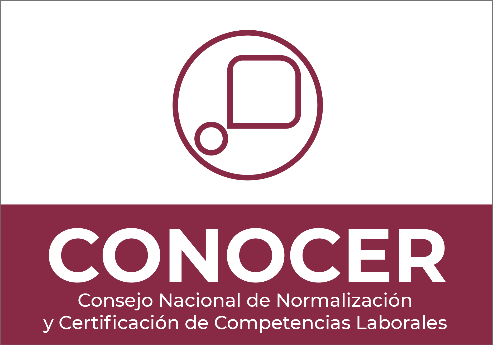
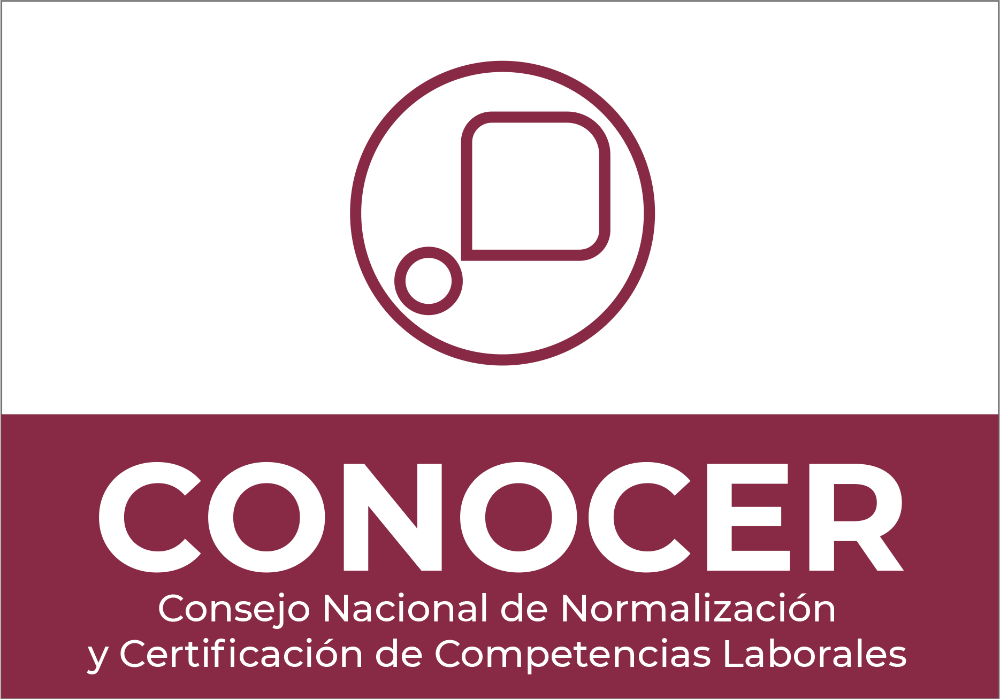

Nuestra Propuesta de Valor
En TEOCALLI, creemos que el conocimiento se construye paso a paso. Por eso, nuestro Programa
en Principios de Análisis y Visualización de Datos está diseñado como una ruta de aprendizaje progresiva,
compuesta por cursos complementarios que te llevarán desde lo esencial hasta lo avanzado.
Aprenderás haciendo, enfrentando desafíos reales y aplicando los conceptos en ejercicios prácticos desde
el primer día.
Cada curso te ayudará a profundizar en un tema clave, consolidando tus conocimientos con una base sólida para avanzar
con confianza.
Al completar el programa, tendrás una visión integral del análisis de datos y serás capaz de elegir y utilizar las
herramientas más adecuadas para resolver problemas de manera efectiva en tu entorno profesional.
TEOCALLI, no solo accedes a contenido de calidad: te acompañamos en un proceso de transformación real, convirtiendo
el conocimiento en habilidades prácticas.
¡Únete a nosotros y comienza a dominar el análisis y la visualización de datos con propósito
 
